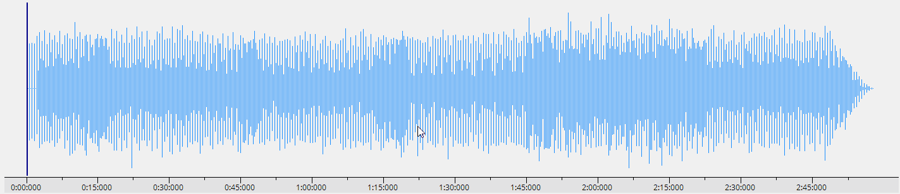

Music Analyser is an application designed to provide a technical analysis of the musical elements present in an audio track. Through the use of audio processing and DSP, key technical features of the music - the notes, chords and key signature - are extracted in real-time and displayed intuitively to the user. While the analysis produced is not guaranteed to be completely accurate, Music Analyser aims to serve as a tool to help musicians and music enthusiasts in their quest to transcribe or to better understand a piece of music.
Getting Started
The User Interface
The principle way to interact with Music Analyser is through its graphical user interface (GUI). An annotated overview of the GUI is displayed below:
Playback controls - Buttons to open/close the audio file (WAV and MP3 supported), start/stop playback, and reset playback to a set position.
Mode Selector - Allows selection between Play, Step and Record modes. More details are given in section: Analysis Modes
Volume & Tempo controls - Sliders to adjust the volume and speed of the audio playback. The tempo slider also affects the speed of analysis to keep it in sync with the playback.
Playback Time Information - Displays a reading of the current playback time, the selected start timestamp, and the duration of a looped section if selected.
Playback Roll/Waveform Viewer - Displays the time domain waveform representation of the loaded audio track. More details are given in section: The Playback Roll.
Script Selector Panel - Allows a chain of scripts to be configured that describe how to process and analyse the audio. More details are given in section: The Script Chain
Execution Time - The current execution time for a full update cycle is displayed in milliseconds, allows the computational performance of the analysis to be gauged.
Pitch Sync - Applies an offset to the pitch detection algorithm to enable it to identify notes that are not tuned to standard pitch (A4 = 440 Hz). More details are given in section: Pitch Sync.
Spectrum & Spectrogram controls - UI controls to configure spectrum and spectrogram functionality. More details on the spectrogram as giving in section: The Spectrogram
Frequency Spectrum - Displays a high resolution output of the processed frequency spectrum obtained from the audio in real-time. More details are given in section: The Frequency Spectrum
Musical Analysis Panel - Displays the current musical analysis output. This includes the rolling note distributions and the predicted key signature and chords.
Analysis Modes
There are three analysis modes in Music Analyser: Play, Step and Record.
In Play mode, the loaded audio track can be analysed through real-time playback. This is the most commonly used mode.
Step mode allows single snapshots of analysis to be computed and displayed at discrete points in the track's duration; select a time interval to step through and click the Forward or Back buttons to progress the track by the step interval in either direction.
Record mode allows audio from an external capture device (eg. a microphone) to be recorded. Once recording has stopped, the app will return to Play mode where the recorded audio can be analysed as normal. The capture device can be configured via the Capture Device dropdown in the Preferences menu (General tab).
The Playback Roll
The Playback Roll provides an interactive overview of the loaded audio track. Upon loading a track, its waveform representation is displayed here, as shown below:
The waveform is initially condensed to cover the entire duration of the track while a timeline spans the X-axis. The Start Position Indicator is denoted by the thick blue line positioned at the beginning of the track, this tells Music Analyser where playback should start. Left clicking at any point along the waveform updates the position of the Start Position Indicator.
To zoom into a portion of the waveform, right click and drag to select the portion of the waveform to zoom into. As shown in the animation below, two thin black lines stretch out to encapsulate the area which which will be zoomed into. The timeline updates to reflect the portion of the waveform now in view. The fully zoomed out view of the waveform can be restored by clicking the middle mouse button, or alternatively, by pressing Shift.

To loop a section of the track, left click and drag over the section of the track to be looped. A second blue line, denoting the end of the looped section, will appear while the duration of the looped section will be highlighted in gray, as shown below:
Once playback has started, a 10 second portion of the waveform is displayed (the duration can be changed via the Follow Interval setting in the Preferences menu (General tab)) and the Playback Position Indicator - a thin black line - will move along the waveform in time with the playback. With playback following enabled, once the Playback Position Indicator reaches the end of the displayed portion of the waveform, it resets to the beginning of the playback roll while the next waveform portion is displayed. This is demonstrated below:
Playback following can be disabled by unchecking the Follow Playback checkbox to the top-right of the UI. With playback following disabled, the blank spaces to the right and left of the waveform can be clicked to progress the displayed waveform portion forward or backward in time respectively.
The Script Chain
One of the most important design features of Music Analyser is its modular and customisable approach to signal processing. The Script Chain and Script API are key to this as they allows elements of the processing performed by the app to be packaged into independent scripts which can be combined and customised in numerous ways.
The Script Chain is configured via the Script Selector Panel on the UI, an overview of this is provided below:
Preset Selector - A set of preset script chain configurations are included, these can be selected here. Once a preset is selected, its configuration is loaded and applied. Changes made to a preset can be saved by saving the preset with the same name, alternatively, a new preset can be created by saving the preset with a unique name.
Script Chain Panel - This panel lists all of the scripts currently in the script chain. New entries can be added by clicking the Add button while clicking the X button next to each script entry will remove it from the list. For each entry, a script is selected from the dropdown menu. While the script chain is customisable, the app requires that a single primary processor script (eg. FFT or CQT script) and a single primary detector script (eg. note detector script) is present and that the primary processor is the first script in the chain. Between and after the primary scripts, any number of secondary scripts can be placed. These may be scripts that augment the signal processing and detection in some way, such as filters.
Settings Panel - Each script can have settings associated with it, these are presented here. A setting can be any property or value present in the script that the script's author wishes to expose to the UI (eg. a cutoff frequency or threshold value). Settings can be changed and applied 'on the fly', allowing different configurations to be trialed seamlessly. To view a script's settings, click on the entry for that script in the Script Chain Panel and its associated settings will be shown.
Note: The presets 'HarmonicProductSpectrum' and 'FFT-Magnitude' are recommended for general use as these are currently the best optimised for musical analysis, however, feel free to experiment with other presets/script configurations.
Pitch Sync
For note detection in Music Analyser, it is assumed that all music is tuned to standard pitch (A4 = 440 Hz). This is not always the case in music, however, and when it is not it can present some problems for the note detection algorithms.
The Pitch Sync feature alleviates this by allowing a small pitch offset to be applied to the note detection algorithm, altering the frequency thresholds for all notes. The offset can range from 50 cents below standard pitch to 50 cents above, where a cent 1/100 of a semitone. An error value is calculated by averaging the deviations of each detected note's frequency from standard pitch over several analysis updates, this is displayed on the UI as shown:
In the example above, the error is 25 cents above standard pitch. This requires a correction of -25 cents to return to standard pitch, thus, the Pitch Sync slider should be moved to the left to apply the desired correction.
As shown above, a pitch offset of -25 cents has been applied and the error has been reduced dramatically. Small error deviations are still possible when using Pitch Sync since not all notes in the music will be tuned perfectly all the time.
The Frequency Spectrum
Music Analyser displays its main analysis output through the Frequency Spectrum. The key information displayed here is annotated below:
The spectrum updates smoothly after each analysis update, the Execution Time readout above the spectrum displays the current update rate in milliseconds. The frequency range displayed on the spectrum can be selected using the set of numeric controls situated above the spectrum panel.
A peak filter can be applied to any frequency on the spectrum to help to better hear and contextualise the prominent frequencies in the audio. This can be enabled by toggling the Note Highlight Filter checkbox located above the spectrum panel. A gray circular control will appear on the spectrum panel which can be dragged horizontally to control the centre frequency and vertically to control the filter amount. This is demonstrated below:
Description: Optimised for the Harmonic Product Spectrum (HPS) algorithm, this seeks to consolidate harmonic components into a single peak at the fundamental by multiplying many downsampled copies of the spectrum. Works best for music that contains timbres with rich harmonic components (eg. guitar, piano, violin, etc).
Description: Analyses the output of a stock FFT (linear magnitude) applied to the audio with no additional processing, lower processing workload results in faster execution time but possibly more noisy/less accurate results. Works best as an alternative to HPS when the audio does not contain many harmonic components.
CQT-Magnitude (Experimental)
Script Chain: CQT -> CQTByMagnitude
Description: Obtains frequency analysis using the Constant-Q Transform (CQT), an algorithm that aims to resolve the resolution limitations of the FFT for musical applications by spacing the frequency bins logarithmically instead of linearly so that each bin will line up with the centre frequency of a musical note. The current implementation of this algorithm is very slow, however, thus it is not currently recommended for real-time use.
Description: Identical to the main HPS preset except the output magnitudes are squared. This eliminates most noise but limits the sensitivity of pitches to only those that have the strongest magnitude. Recommended only when analysis of strong single notes is desired (eg. a prominent melody).
Description: Outputs a stock FFT of the audio that is logarithmically scaled in magnitude (dB). This is not an optimal way to perform analysis so this preset is generally not recommended.
Script Definitions
Primary Processor Scripts
BasicFFT
Author: Sean King
Description: Simple Fast Fourier Transform (FFT) implementation using NAudio. Based on the FFT implementation by Scott Harden.
Properties
InputBuffer: type short[]
OutputBuffer: type double[]
InputArgs: SAMPLE_RATE - sample rate (Hz) of the input signal - type int
OutputArgs: SCALE - ratio between FFT resolution and sample rate - type double
Settings
WINDOW (Window Function): Specifies the window function used - type enum (values: Rectangle, Hamming, Hann, BlackmannHarris)
OUTPUT_MODE (Output Mode): Specifies how the output magnitude should be scaled - type enum (values: Magnitude, dB)
SQUARE (Square Output): Specifies whether output magnitudes should be squared - type enum (values: Yes, No)
MAG_LIMIT (Magnitude Limit): Sets the maximum output magnitude value - type int (0 - 10000)
CQT (Experimental)
Author: Sean King
Description: Constant-Q Transform (CQT) implementation with optimised kernel calculation, set up for 12 tone equal temperament analysis. Based on the efficient CQT algorithm by Benjamin Blankertz.
Properties
InputBuffer: type short[]
OutputBuffer: type double[]
InputArgs: SAMPLE_RATE - sample rate (Hz) of the input signal - type int
OutputArgs: SCALE - Non-linear scale function to map each frequency bin to a frequency value - type Func<int, double>
Settings
OCTAVES (Octaves): Number of octaves to analyse - type int (1 - 10)
BINS_PER_OCTAVE (Bins Per Octave): Number of frequency bins per octave - type enum (values: 12, 24, 36, 48, 60, 72, 84, 96)
MIN_FREQ (Minimum Frequency (Hz)): Starting frequency (Hz), for analysis in standard tuning use appropriate note frequency (eg. C1 = 32.7 Hz) - type double (1 - 1000)
N_WEIGHTING (Frequency Weighting Factor): Frequency weighting factor, lower values emphasise the magnitude of low frequencies and vice versa - type double (0 - 1)
OUTPUT_MODE (Output Mode): Specifies how the output magnitude should be scaled - type enum (values: Magnitude, dB)
SQUARE (Square Output): Specifies whether output magnitudes should be squared - type enum (values: Yes, No)
Secondary Processor Scripts
HPSDownsampler
Author: Sean King
Description: Implementation of the Harmonic Product Spectrum (HPS) algorithm, to be used in conjunction with a FFT primary processor script. Based on the HPS method described here.
Properties
InputBuffer: type double[] (Output of FFT)
OutputBuffer: type double[]
InputArgs: None
OutputArgs: None
Settings
HARMONICS (Number of Harmonics): Specifies the number of harmonics to consolidate via downsampling - type int (values: 0 - 5)
INTERP (Interpolation Factor): Specifies an interpolation factor to upsample output spectrum - type int (values: 1 - 5)
MAG_SCALE (Magnitude Scale Factor): Specifies a value to scale down the output magnitude exponentially - type double (1 - 5)
SQUARE (Square Output): Specifies whether output magnitudes should be squared - type enum (values: Yes, No)
FLOOR (Spectrum Floor): Specifies the minimum output spectrum value - type double (0 - 10)
RemoveKickNoise
Author: Sean King
Description: Culls detected peaks which may have been caused by low frequency noise (eg. kick drum)
Properties
InputBuffer: type Dictionary<double, double>
OutputBuffer: type Dictionary<double, double>
InputArgs: None
OutputArgs: None
Settings
CUTOFF_FREQ (Cutoff Frequency (Hz)): Maximum frequency (Hz) considered for processing - type double (0 - 1000)
MAX_FREQ_CHANGE (Max Frequency Change (Hz)): Considers peaks for culling if they are within this percentage difference - type double (0 - 50)
SIMILAR_GAIN_THRESHOLD (Similar Gain Threshold (dB)): Threshold within which adjacent peaks are considered similar in magnitude - type double (0 - 50)
SpectrumFilter
Author: Sean King
Description: Performs a band pass filter operation on the frequency spectrum. Can be used with both linearly scaled (eg. FFT) and non-linearly scaled (eg. CQT) spectrums.
Properties
InputBuffer: type double[] (Spectrum)
OutputBuffer: type double[]
InputArgs: SCALE - Frequency scale value/function - type double (linear) or Func<int, double> (non-linear)
OutputArgs: None
Settings
ENABLED (Enabled): Specifies if filter is active or bypassed - type enum (values: Yes, No)
LOW_CUT (Low Cutoff (Hz)): Specifies the low cutoff frequency (Hz) of the band pass filter - type double (values: 0 - 2000)
HIGH_CUT (High Cutoff (Hz)): Specifies the high cutoff frequency (Hz) of the band pass filter - type double (values: 0 - 2000)
ATT_FACTOR (Attenuation Factor): Specifies the sharpness of the attenuated bands - type double (0 - 1)
SpectrumQuantiser
Author: Sean King
Description: Quantises the magnitude values of the frequency spectrum to a specified number of levels. Can be used with both linearly scaled (eg. FFT) and non-linearly scaled (eg. CQT) spectrums.
Properties
InputBuffer: type double[] (Spectrum)
OutputBuffer: type double[]
InputArgs: None
OutputArgs: None
Settings
ENABLED (Enabled): Specifies if filter is active or bypassed - type enum (values: Yes, No)
LEVELS (Quantization Levels): Specifies the number of quantisation levels to be used - type enum (values: 16, 32, 64, 128, 256, 512, 1024)
Primary Detector Scripts
PitchByMagnitude
Author: Sean King
Description: Peak detection algorithm optimised for detecting musical pitches (12 tone equal temperament) from an FFT spectrum. Searches through chunks of the input signal at intervals corresponding to musical pitches, resolves clusters of points to a single value (largest in cluster), returns largest n values.
Properties
InputData: type double[]
Output: type Dictionary<double, double>
InputArgs: SCALE - Ratio between number of input values and sample rate - type double, TUNING - Percentage difference from standard tuning - type double
OutputArgs: TUNING_OUT - Sends the script defined pitch offset value (see Settings: TUNING_OFFSET) back to the app - type int
Settings
MIN_FREQ (Minimum Frequency (Hz)): Starting frequency (Hz), for analysis in standard tuning use appropriate note frequency (eg. C1 = 32.7 Hz) - type double (1 - 1000)
OCTAVES (Octaves): Number of octaves to analyse - type int (1 - 10)
MAX_VALS (Maximum Frequency Points): Maximum number of peaks to return - type int (1 - 100)
MAG_THRESHOLD (Magnitude Threshold): Threshold above which point is considered a peak, relative to max magnitude-average magnitude - type double (0 - 1)
FREQ_TOLERANCE (Frequency Tolerance (%)): Percentage tolerance from musical pitch, if within this a frequency bin is considered for analysis - type double (0 - 50)
TUNING_OFFSET (Tuning Offset (cents)): Pitch offset (in cents) applied to the detection algorithm, similar to Pitch Sync but applied within the script directly - type int (-50 - 50)
ByMagnitude (Depreciated)
Author: Sean King
Description: Performs generic peak detection by finding the points in the signal with the largest magnitude. Searches through the input signal adding peak values to a rolling buffer, resolves clusters of points to a single value (largest in cluster).
Properties
InputData: type double[]
Output: type Dictionary<double, double>
InputArgs: SCALE - Ratio between number of input values and sample rate - type double
OutputArgs: None
Settings
MIN_FREQ (Min Frequency (Hz)): Frequency (Hz) to start analysis at - type int (0 - 20000)
MAX_FREQ (Max Frequency (Hz)): Frequency (Hz) to end analysis at - type int (0 - 20000)
THOLD_FROM_AVG (Gain Threshold (from Avg) (dB)): Threshold above average magnitude for value to be considered a peak - type int (-50 - 50)
PEAK_BUFFER (Spectrum Peak Buffer Size): Size of the rolling peak buffer - type int (0 - 500)
MAX_GAIN_CHANGE (Max Gain Change (dB)): Magnitude difference above which adjacent peaks will be culled - type double (0 - 50)
MAX_FREQ_CHANGE (Max Frequency Change (%)): Percent frequency margin within which peaks are considered in a cluster - type double (0 - 50)
BySlope (Depreciated)
Author: Sean King
Description: Performs generic peak detection by finding the points in the signal with the steepest slope.
Properties
InputData: type double[]
Output: type Dictionary<double, double>
InputArgs: SCALE - Ratio between number of input values and sample rate - type double
OutputArgs: None
Settings
MIN_FREQ (Min Frequency (Hz)): Frequency (Hz) to start analysis at - type int (0 - 20000)
MAX_FREQ (Max Frequency (Hz)): Frequency (Hz) to end analysis at - type int (0 - 20000)